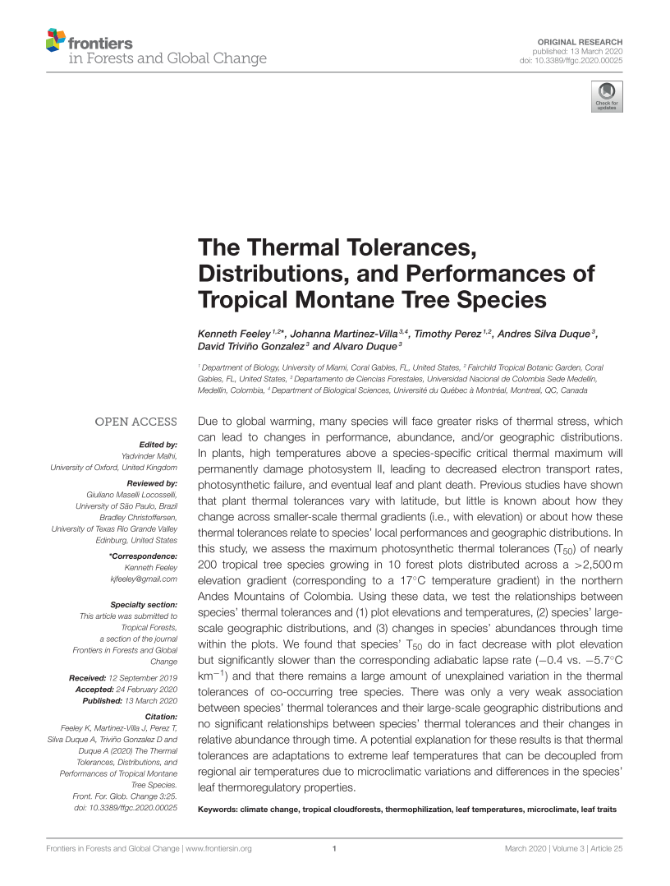

Due to global warming, many species will face greater risks of thermal stress, which can lead to changes in performance, abundance, and/or geographic distributions. In plants, high temperatures above a species-specific critical thermal maximum will permanently damage photosystem II, leading to decreased electron transport rates, photosynthetic failure, and eventual leaf and plant death. Previous studies have shown that plant thermal tolerances vary with latitude, but little is known about how they change across smaller-scale thermal gradients (i.e., with elevation) or about how these thermal tolerances relate to species’ local performances and geographic distributions. In this study, we assess the maximum photosynthetic thermal tolerances (T50) of nearly 200 tropical tree species growing in 10 forest plots distributed across a >2,500m elevation gradient (corresponding to a 17◦C temperature gradient) in the northern Andes Mountains of Colombia. Using these data, we test the relationships between species’ thermal tolerances and (1) plot elevations and temperatures, (2) species’ large- scale geographic distributions, and (3) changes in species’ abundances through time within the plots. We found that species’ T50 do in fact decrease with plot elevation but significantly slower than the corresponding adiabatic lapse rate (−0.4 vs. −5.7◦C km−1) and that there remains a large amount of unexplained variation in the thermal tolerances of co-occurring tree species. There was only a very weak association between species’ thermal tolerances and their large-scale geographic distributions and no significant relationships between species’ thermal tolerances and their changes in relative abundance through time. A potential explanation for these results is that thermal tolerances are adaptations to extreme leaf temperatures that can be decoupled from regional air temperatures due to microclimatic variations and differences in the species’ leaf thermoregulatory properties.
